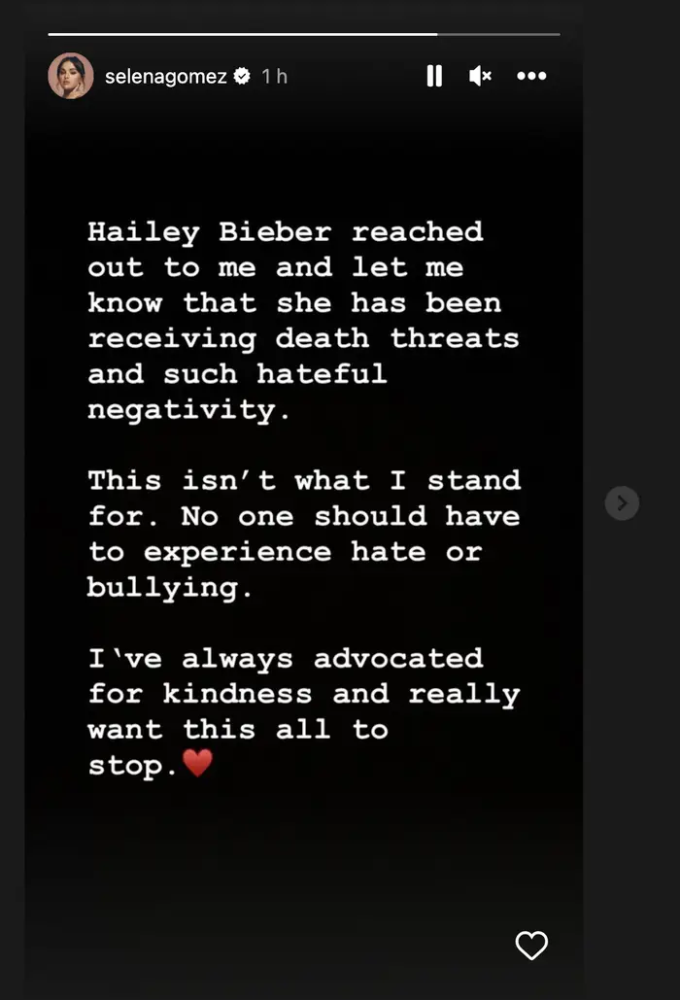

Source: https://www.buzzfeednews.com/article/ikrd/selena-gomez-hailey-bieber-feud-fan-created?ref=bfnsplash
BuzzFeed News; Lionel Hahn / Getty Images; Christopher Polk / NBC via Getty Images
The notorious rumored feud between Hailey Bieber and Selena Gomez that has inundated social media for weeks appeared to reach a boiling point on Friday after Selena asked her fans to stop threatening and harassing Hailey.
“Hailey Bieber reached out to me and let me know that she has been receiving death threats and such hateful negativity,” Selena wrote in an Instagram story. “This isn’t what I stand for. No one should have to experience hate or bullying. I’ve always advocated for kindness and really want this all to stop.”
For the first time, Selena started following Hailey on Instagram — and just a few hours later, Hailey followed her back.

Instagram
The online discourse about Hailey and Selena makes it appear that the duo actively hate each other. However, neither woman has said anything offensive to the other in public. Instead, for almost 10 years, fans have dedicated themselves to creating and fighting this war on their behalf. I know this because I was a die-hard Belieber and I saw most of it play out in real time as the stars’ fans pit the women against each other in tweets and edited videos.
Just in case you need a reminder of why these two grown women are allegedly mad at each other, Selena and Justin Bieber dated on and off for seven years and garnered a fandom along the way that ships the couple as "Jelena". In 2018, the couple broke up, and months later Justin announced his engagement to Hailey. That’s when the rivalry got really messy and splintered into three warring sides: Team Selena, Team Hailey, and Team Jelena.
The algorithm had a two-fold effect: exposing more people to the feud while also further fueling conspiracy theories.
Twitter was the main battleground until TikTok came along. With its powerful algorithm, TikTok has been pushing conspiracy theories onto the For You pages of users who may have shown even a passing interest in any of the three celebrities. You could have watched a single video of Hailey's glazed donut nails or one of Selena's videos about Rare Beauty and your FYP would begin showing you conspiracy theories about how Hailey is obessed with copying Selena.
And when Selena joined TikTok last year, millions of her fans followed suit, not only to watch her videos but also to defend her against any perceived slights. The algorithm had a two-fold effect: exposing more people to the feud while also further fueling conspiracy theories.
Over the years, fans have connected the dots on moments that may have nothing to do with each other.

Justin Bieber and Hailey Bieber in New York City, Jan. 24, 2023 | GC Images
For example, three years ago, Selena and Hailey went to the same buzzy West Hollywood restaurant on the same day. There was an unverified rumor from a fan account on Twitter that Hailey and singer-songwriter Madison Beer, who were there together, had asked restaurant staff to play Justin’s song “Yummy” to spite Selena. (Justin has said that he wrote “Yummy” about his love for Hailey.)
The online harassment Hailey and Madison received afterward was so bad that the latter wrote on Instagram: “i love selena.. always have ... and i would literally never in a million years try to upset her??? this is just mean and unnecessary and nothin happened.’” Selena repsonded and called the trolling “disgusting” and added “there is no issue.”
But that didn’t stop people. Toward the end of 2020, when Selena released her hit song “Lose You to Love Me,” which was reportedly about Justin. Minutes after its release, Hailey shared a Summer Walker song on social media. Unfortunately, the title of the song was “I’ll Kill You.” Fans decided that the song title was an open threat to Selena, and Hailey was inundated with messages from Selena’s fans yet again.